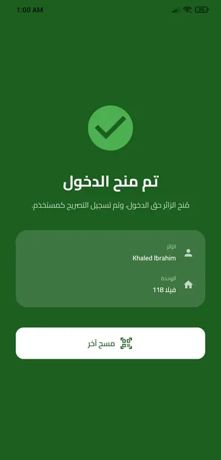
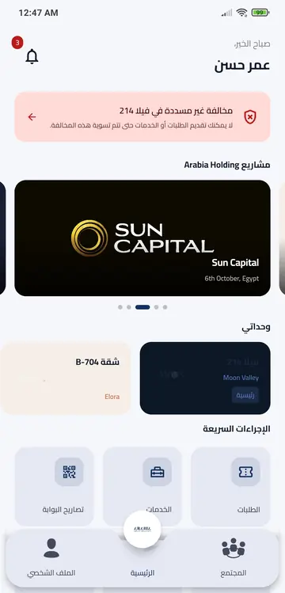
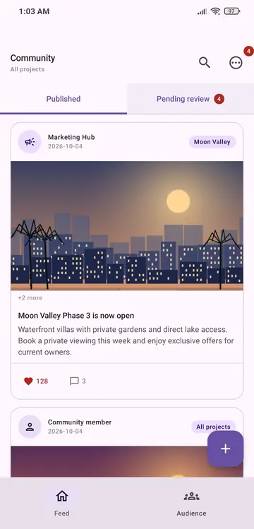

Android developer building connected PropTech ecosystems
At Arabia Holding I designed, built and deployed a family of Android apps for residents, sales, operations, gate security, marketing, violations and support, all on one Ktor backend integrated with Vtiger CRM.



One platform, many hubs
Every app talks to the same backend, so a resident's request can reach customer service and the gate without duplicate data entry. Deployed and operated on AWS Lightsail.
From lead to resident
Follow one buyer through the seven apps. Every handoff goes through the same Ktor backend and Vtiger CRM, so no team re-enters data.
The Arabia ecosystem
Screens use demo data; no real resident or company information is shown. Tap any screen to enlarge.
Where I've worked
- Designed, built and deployed the full ecosystem: Android apps, a Ktor backend and Vtiger CRM integration.
- Owned the deployment pipeline and infrastructure on AWS Lightsail.
- Customised Zoho CRM to automate sales and customer-service workflows.
- Built Android apps for real-time sales and support communication with Firebase (realtime data, push notifications, live messaging).
B.Sc. Computer Science, Mansoura University (2018–2022), Faculty of Computers and Information. Graduation project: BabyCare App (Excellent). Personal project: Weathering With You, a weather app built with Clean Architecture, Hilt and Navigation Compose.
Toolbox
Let's talk
Open to conversations about Android, PropTech and CRM-integrated platforms. Arabic (native) · English (very good).